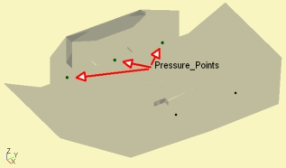

| Purpose | Pressure points driving the field. |
| Used in | Boundary Element Script, Direct Sound Script |
| See also | Pressure_Box |
|
Pressure_Points "Any Name"
Subdomain=
DrvGroup=
DrvWeight=
DrvDelay=
RefNodes=
MeshFileAlias=
MeshMode=
MeshMinDistance=
Color=
Set=
List of Pressure Points
List of Pressure Points by Mesh-File
Alternatively to driving from a boundary-surface (see chapter Driving) a domain can also be driven by ideal pressure points. This is of course most useful for scattering problems such as the sound field distribution in a room etc.
There can be as many Pressure_Points-sections as you need.
Component Pressure_Box is similar to Pressure_Points, but allows for directivity.
In case of symmetry or the use of an Infinite Baffle mirror pressure points will be installed automatically by the use of a special Green-Function.
In Dim=3D Pressure_Points resemble ideal point sources, which radiate radial. The sound pressure is
p(d) = p0·exp(-jkd)/d
with d distance between source-point and observation point, k = ω/c wavenumber, c speed of sound and j imaginary unit and p0 some constant.
In Dim=2D we have ideal pressure-lines, which radiate radially in the 2D-plane. The sound pressure is
p(d) = p0·(Y0(kd) + j·J0(kd))
with Y0 Neumann-function and and J0 Bessel-function of zero order.
In Dim=CircSym Pressure_Points resemble concentric rings of constant pressure. The sound-pressure-distribution followes the Bessel-function of zero order.
At solving stage of the Boundary Element Method or in Direct Sound Analysis the driving of Pressure_Points is only marked, so to say, with the help of parameter DrvGroup=. There are no driving-values yet. The actual values are bound later at observation-stage with the help of the section Driving_Values or with the help of a Lumped-Element script. In this way a structure can be driven with a range of driving values without the need of re-solving. See also chapter Driving Groups.
 The Boundary Element Analysis
can be useful for the acoustic analysis of small rooms. In this case
Pressure_Points may serve as idealized sources. A straightforward example
is "Damped Walls", where we find following specification for the source:
The Boundary Element Analysis
can be useful for the acoustic analysis of small rooms. In this case
Pressure_Points may serve as idealized sources. A straightforward example
is "Damped Walls", where we find following specification for the source:
Pressure_Points
RefNodes="PressurePoints"
DrvGroup=1001
// Name Node Weight
100 1000 1.0
In this example we specified only a single point (Index=100) at Node=1000. However, because this model exploits symmetry in y (Sym=y), ABEC will install two Pressure_Points at mirror positions. Note, symmetry assumes identical pressure distribution in the symmetric parts of the model. Conversely, if you want to excite with only a single source at this position or plan to have different driving-values for each point then you would need to model the whole structure.
The Pressure_Point section of this example is linked to the driving group DrvGroup=1001, which, after solving, can be excited with the help of section Driving_Values of an Observation Script. For example
Driving_Values
DrvType=Pressure
Value=1
101 DrvGroup=1001 Weight=0.1
You can also control the position and distribution of Pressure_Points with the help of Mesh-Files. See ABEC3 Examples\BEM\Rooms\Room-Hex.
This example demonstrates the link to Sketchup using Mesh-Files of format Collada. The CAD-file is organized in groups, which names can be used as Tags in ABEC-scripts (see Mesh-File-Tags). For example there is one group called "Hall" for the boundaries of the hexagonal room and one called "Stage" for the side-room.
For the purpose of demonstration the CAD containes two little spheres and a rectangle, which are used to position a Pressure_Box and Pressure_Points. Because of providing group-names we can access these mesh-file-triangles for positioning.
 |
...
Pressure_Points "PP1"
DrvGroup=1002
MeshFileAlias=M
MeshMode=Center
MeshMinDistance=0.2m
101 Mesh Include "Right"
Pressure_Box "PB1"
DrvGroup=1001
CabDim=1m,1.60m,0.60m
MeshFileAlias=M
Position= Mesh Include "Speaker"
There is a single pressure-point assigned to the center of the sphere called "Right". The Pressure_Box is oriented with the help of the rectangle with group-name "Speaker".
Pressure_Points are also used for Direct Sound Analysis, where these points resemble idealized point sources. This type of analysis consists of a Direct Sound Script and one or more Observation Scripts.

The following Direct Sound script is taken from example "Direct Sound - Stage":
Formula
tau=1e-3
Nodes "PressurePoints"
1000 16.0 40.0 0.5
1001 15.0 30.0 0.5
1002 16.0 20.0 0.5
1003 16.0 10.0 0.5
1004 16.0 0.0 0.5
1005 16.0 -10.0 0.5
1006 16.0 -20.0 0.5
1007 15.0 -30.0 0.5
1008 16.0 -40.0 0.5
Pressure_Points "PressurePoints"
RefNodes="PressurePoints"
DrvGroup=1001
100 1000 Weight=1.0 Delay={tau}
101 1001 Weight=1.0 Delay={tau}
102 1002 Weight=1.0
103 1003 Weight=1.0
104 1004 Weight=1.0
105 1005 Weight=1.0
106 1006 Weight=1.0
107 1007 Weight=1.0 Delay={tau}
108 1008 Weight=1.0 Delay={tau}
There are 9 Pressure_Points distributed along the stage. They all share the same DrvGroup=1001, hence will receive the same driving value at observation stage. However, Pressure_Point #100, #101, #107, #108 are assigned a Delay=. The value of this delay is specified with the help of a formula in section Formula.
The Direct Sound Script specifies only sources. There are no boundaries as in the Boundary Element Analysis.
Observation planes for field analysis or receiving points for spectral analysis are specified in Observation Scripts. Most importantly the actual driving values are specified in section Driving_Values of any observation script. For example:
Driving_Values
DrvType=Pressure;
Value=1.0
101 DrvGroup=1001 Weight=1.0